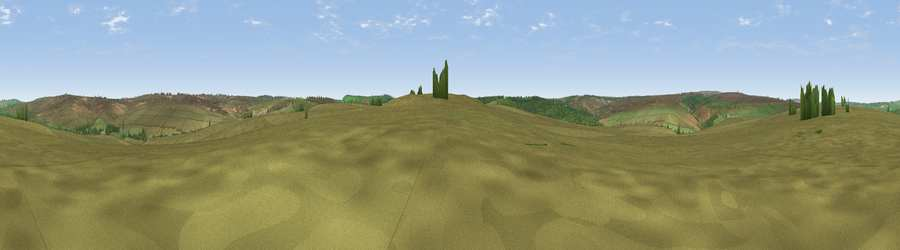

Viewpoint near Goathland
#32866 in England · top 69% of its area beats it · near GoathlandThe view, rendered

A 360° render of this exact spot computed from the terrain model, tree cover and land cover — summer colours, afternoon light, calibrated against photographs of famous viewpoints. Real trees, hedges and buildings will differ in detail.
The panorama
Grey silhouette: terrain skyline in each direction (720 bearings, Earth curvature and refraction included). Dashed green: skyline with trees (+15 m) and buildings (+8 m) as obstacles. Blue strip: how far the ground is visible on each bearing.
Where the view opens
Wedge length = distance to the farthest visible ground on that bearing (vegetation-aware). Rings at 10, 25 and 50 km.
What fills the view
93% grassland · 7% woodland
Angular shares of the visible panorama (visual magnitude), not map area. Landscape diversity 0.11 (0–1 Shannon).
Key numbers
More beautiful places nearby
The staircase of upgrades: each row has a higher view potential than everything closer. Driving times are estimates from straight-line distance, calibrated against real road routing — check an actual route before setting out.
| Place | Direction | Drive | Score |
|---|---|---|---|
| Viewpoint near Goathland | S · 0 km | ~2 min | 42.5 |
| Viewpoint near Levisham | S · 5 km | ~11 min | 59.8 |
| Whinny Nab | SE · 5 km | ~11 min | 64.9 |
| Pen Howe | NNE · 6 km | ~12 min | 67.7 |
| Flat Howe | NNE · 7 km | ~14 min | 76.4 |
| Viewpoint near Eskdaleside | NNE · 7 km | ~14 min | 78.4 |
| Viewpoint near Eskdaleside | NNE · 7 km | ~15 min | 80.7 |
| Viewpoint near Fylingthorpe | ENE · 12 km | ~22 min | 81.1 |
54.37636, -0.72258 · source: screening · position refined by local search. Computed location — check access rights before visiting.